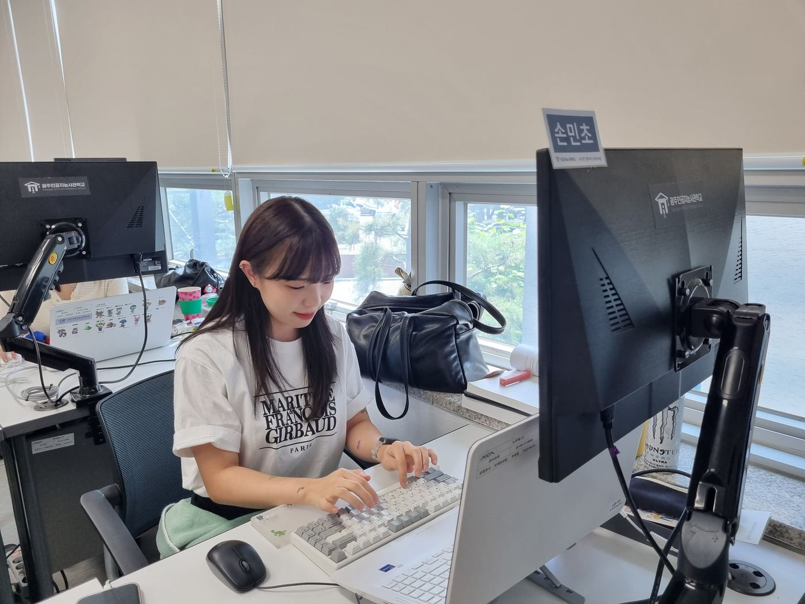
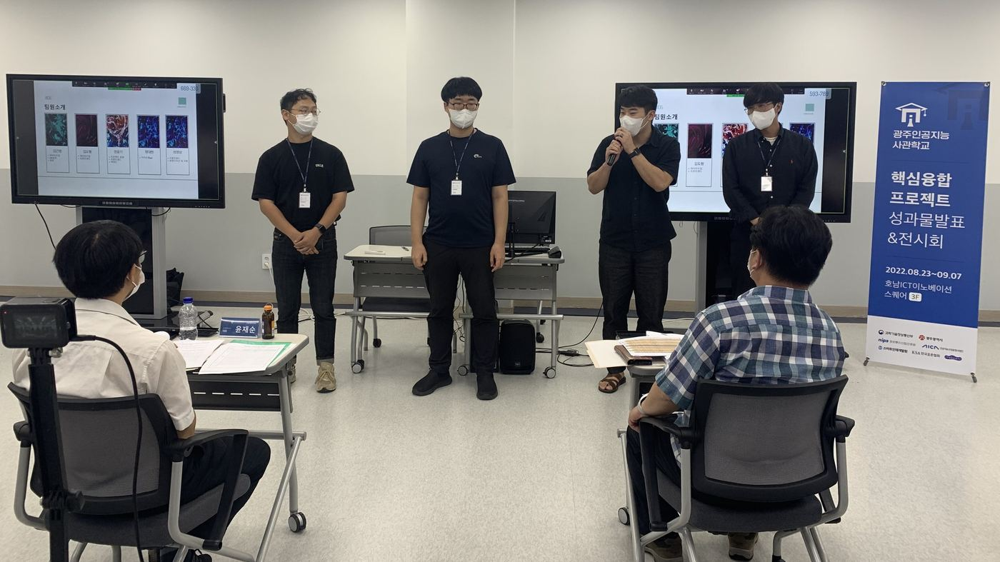
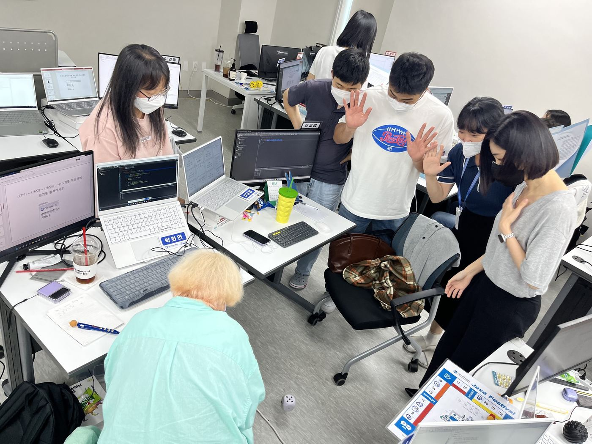
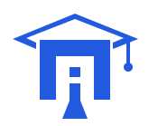

지금, 이곳의 기록
AICA NOW

교실에서 시작한 생각이 결과물이 되기까지.
AICA에서 실제로 일어나는 일들을 만나보세요.
YOUR NEXT STORY
지원하기 전,
진짜 이야기를 만나보세요.
수업 · 생활 · 프로젝트 · 취업
어떻게 배우고, 함께 생활하고,
프로젝트를 만들고, 다음을 준비했는지.
먼저 경험한 교육생의 이야기에서 확인해보세요.